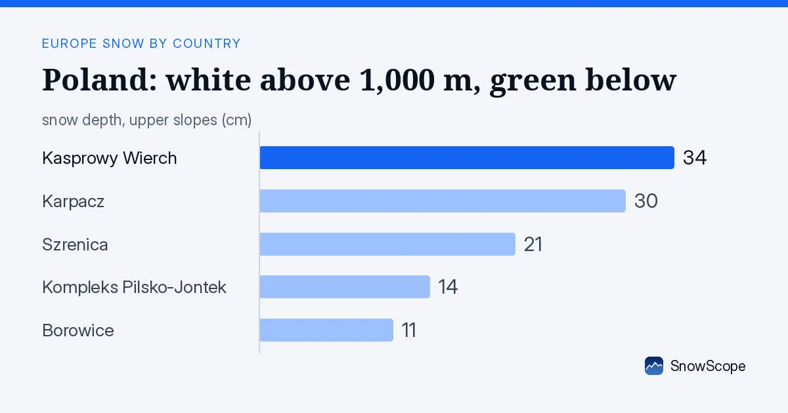
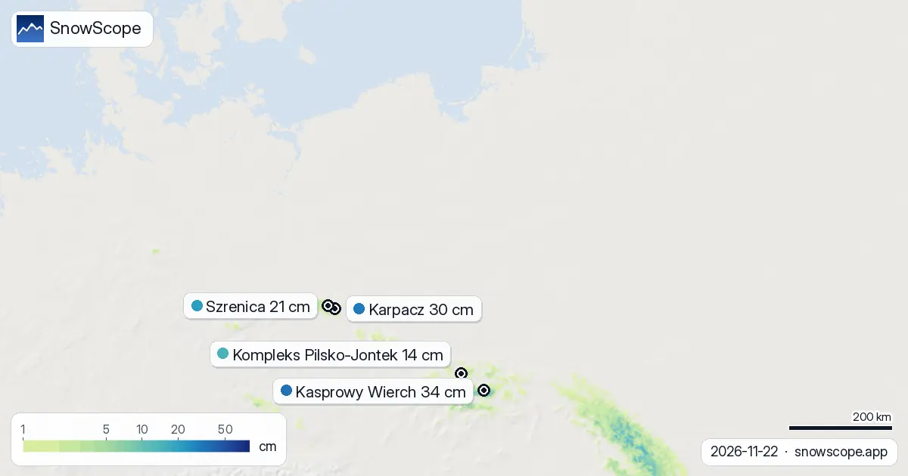

Poland: white above 1,000 m, green below
Most of the ground in Poland is white from about 1,000 m up. Below that, the slopes are mostly green or brown.
See the live snow forecast for Kasprowy Wierch in the SnowScope appSnow depth, powder alerts and the 3D map, free.
The height that makes the difference
That height is the number to compare with a resort's lifts: what matters is how much of the area lies above it.
Snow covers roughly 1,080 km² in Poland on 22 November, 100 km² less than yesterday. That is 10 % of the high ground we map in Poland.
| Resort | Snow depth | New snow, 72 h | Coming, next days | Top |
|---|---|---|---|---|
| Kasprowy Wierch | 34 cm | 10 cm | 8 cm | 1,958 m |
| Karpacz | 30 cm | 10 cm | 3 cm | 1,350 m |
| Szrenica | 21 cm | 9 cm | 4 cm | 1,306 m |
| Kompleks Pilsko-Jontek | 14 cm | 7 cm | 8 cm | 1,433 m |
| Borowice | 11 cm | 8 cm | 3 cm | – |

From the valleys to the summits
Snow depth on the ground, height by height: 500-1,000 m: on average under 1 cm (4 % of the ground white); 1,000-1,500 m: on average 3 cm (88 % of the ground white); 1,500-2,000 m: on average 25 cm (100 % of the ground white).

How much of the country is white
Below about 1,000 m the slopes are mostly green or brown. Seven days ago the figure was 2,970 km², 1,890 km² more than now.
Shortlist for the weekend
The deepest snow of the country's resorts is at Kasprowy Wierch: 34 cm.
Next on the list: Karpacz (30 cm), Szrenica (21 cm), Kompleks Pilsko-Jontek (14 cm) and Borowice (11 cm).
At Kasprowy Wierch: 10 cm of fresh snow over three days, 8 cm more expected by Wednesday 25 November.
At Karpacz: 10 cm of fresh snow over three days, 3 cm more expected by Wednesday 25 November.
33 of the 113 resorts we follow in Poland have snow on their upper slopes.
The rest of the shortlist: Szrenica: 21 cm on top, 9 cm in three days, 4 cm expected; Kompleks Pilsko-Jontek: 14 cm on top, 7 cm in three days, 8 cm expected; Borowice: 11 cm on top, 8 cm in three days, 3 cm expected.
What is coming
Over the next three days up to 8 cm is expected, and up to 11 cm over the week.
Tuesday 24 November stands out, with up to 6 cm in a day.
The second week adds up to 25 cm where it snows most.
Seven days of snow cover
Snow cover in Poland over the last days: 16 November 1,170 km²; 17 November 1,170 km²; 18 November 590 km²; 19 November 370 km²; 20 November 580 km²; 21 November 1,190 km²; 22 November 1,080 km².
The deepest resort changed hands 2 times this week.
The latest snowfall
The Karkonosze, the Tatras and the Beskids got the most fresh snow over three days, up to 8 cm.
About 290 km² received at least 5 cm.
The neighbours today
For comparison, the neighbours on the same day: Slovakia: 13 % white, deepest Vysoké Tatry with 33 cm, up to 10 cm in the week ahead; Czechia: 2 % white, deepest Figura Praděd with 13 cm, up to 7 cm in the week ahead.
Planning a day on the snow
Above 1,000 m the ground is almost fully white (88 % covered), so runs up there have a continuous base.
Below 1,000 m the slopes are still almost bare.
Skiing conditions
Mild weather is eating into the cover: expect firm snow in the morning and slush in the afternoon.
Keep an eye on the forecast: the coming snow could change the picture quickly.
Tips for skiers
- Snow above the tree line can be wind-packed: watch the ridges.
- Read the local avalanche bulletin before going off-piste.
- Early-season snow is thin over rocks: ski the groomed runs first.
About these numbers
Resort snow depths are the deepest snow on the resort's upper slopes from the SnowScope snow model (about 1 km, run of 22 November); they are estimates for an area, not a measurement at one point. Station values are measurements on the date shown. Forecasts can change. Always read the official avalanche bulletin before going off-piste.
Cite this report
For research, teaching or the press: the numbers and charts are free to reuse under CC BY 4.0 with this citation.
SnowScope (2026), Poland: white above 1,000 m, green below, https://snowscope.app/blog/en/2026/11/poland-snow-line-22-november-2026.html, accessed 2026-11-22
SnowScope (Atlas Labs). (2026, November 22). Poland: white above 1,000 m, green below. SnowScope snow reports. https://snowscope.app/blog/en/2026/11/poland-snow-line-22-november-2026.html
BibTeX
@misc{snowscope2026polandsnowline22november,
author = {{SnowScope (Atlas Labs)}},
title = {Poland: white above 1,000 m, green below},
year = {2026},
month = nov,
howpublished = {\url{https://snowscope.app/blog/en/2026/11/poland-snow-line-22-november-2026.html}},
note = {Published 2026-11-22 13:34 UTC; accessed 2026-11-22}
}· CC BY 4.0 · Methods, data and tools →
Kasprowy Wierch: snow and temperature by height, this winter vs last (tools) →
Follow Kasprowy Wierch
Free: a message when fresh snow is coming, and the forecast every morning.
More snow reports

Snow is falling on Slovenia's ski mountains today: about 37 cm on Kanin and 21 cm on Krvavec. Where the snow lies, how it compares with past winters, and the next snowy day.

Tornik on Zlatibor had up to 39 cm on its upper slopes on 15 November 2026; by Wednesday it had melted. Kopaonik barely turned white. The week day by day and what comes next.

Pick a region, dates, budget and what matters; get every resort ranked with the likely snow at the start, the pass, hotel and food per person, chalets to book, and a game mode.